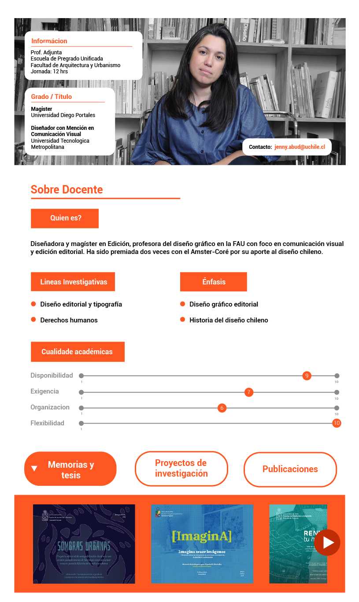
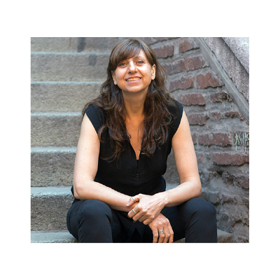
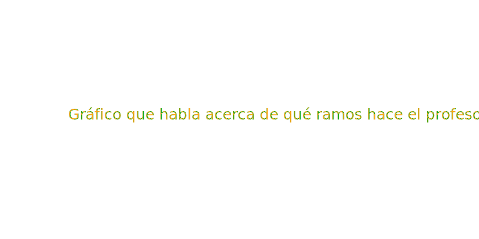
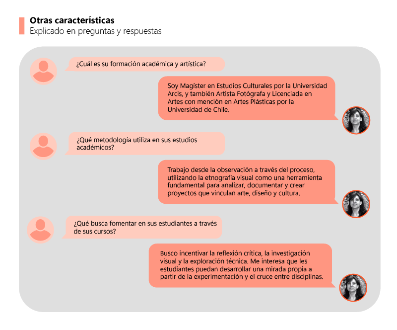
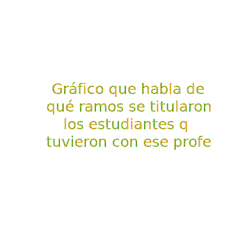
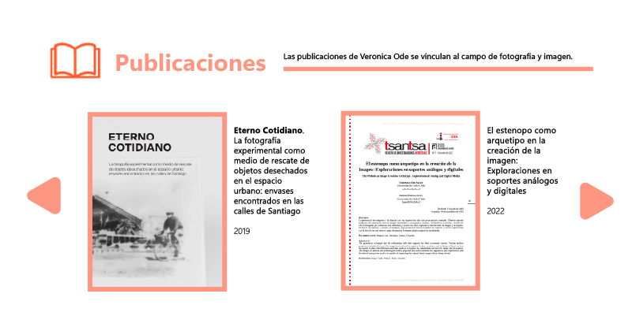
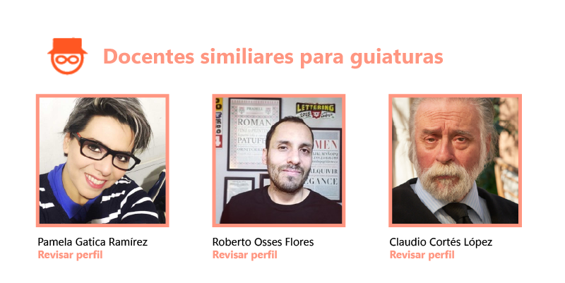

Hola soy,
María Verónica Ode Saleh
Diseñadora en Comunicación Visual
Licenciado en Arte
Magíster en Estudios Culturales de Arcis
Prof. Asistente
Contacto: vode@uchilefau.cl


Líneas de Investigación
Del departamento de diseño
- Morfología, Percepción y Color.
- Estudios Visuales y Mediales.
- Diseño Editorial y Tipografía.
Áreas prioritarias en investigación y creación
De la Facultad de Arquitectura y Urbanismo
Área Prioritária 5: Creación, innovación proyectual y desarrollos tecnológicos.
Área Prioritária 7: Culturas visuales, materiales-inmateriales y mediales.
Área Prioritária 8: Fenómenos sensibles, perceptuales y corporales en el entorno.



¿Cómo se relaciona su nota aprobatoria previa, de Proyecto de Título I, con la nota definida por la comisión examinadora de Proyecto de Título II?
¿Qué parte de las inscripciones en la asignatura de Proyecto de Título II con se han convertido en Exámenes de Título aprobados?
| Egresado/a | Título | Semestre | Proyecto | Nota |
|---|